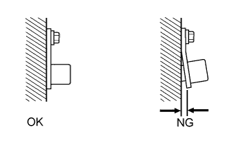

DTC P0335 Цепь датчика положения коленчатого вала "A" |
DTC P0339 Прерывистый сигнал в цепи "A" датчика положения коленчатого вала |
| Режим поездки при обнаружении DTC | Условие обнаружения DTC | Неисправный участок |
| Прокручивание коленчатого вала или запуск двигателя | Если выполняется следующее условие (в течение 5 с во время прокручивания коленчатого вала двигателя или в течение 0,5 с во время запуска двигателя) (логика диагностирования за 1 поездку): В ЕСМ не поступает сигнал датчика положения коленчатого вала при прокручивании коленчатого вала двигателя стартером. |
|
| Режим поездки при обнаружении DTC | Условие обнаружения DTC | Неисправный участок |
| Двигатель работает с частотой вращения коленчатого вала 1000 об/мин или более, когда автомобиль стоит на месте | В ЕСМ не поступает сигнал датчика положения коленчатого вала в течение 0,05 с или более, и выполняются условия (a), (b) и (c) (логика диагностирования за 1 поездку):
|
|
| № DTC | Параметры из Data List |
| P0335 | Частота вращения коленчатого вала двигателя |
| P0339 |
| 1.ПРОВЕРЬТЕ ДАТЧИК ПОЛОЖЕНИЯ КОЛЕНЧАТОГО ВАЛА |
Проверьте датчик положения коленчатого вала (Нажмите здесь).
|
| ||||
| OK | |
| 2.ПРОВЕРЬТЕ ЖГУТ ПРОВОДОВ И РАЗЪЕМ (ДАТЧИК ПОЛОЖЕНИЯ КОЛЕНЧАТОГО ВАЛА - ECM) |
Отсоедините разъем датчика положения коленчатого вала.
Отсоедините разъем ECM.
Измерьте сопротивление в соответствии со значениями, приведенными в таблице ниже.
| Контакты для подключения диагностического прибора | Условие | Заданные условия |
| C70-1 (NE+) - C92-7 (NE+) | Всегда | Менее 1 Ом |
| C70-2 (NE-) - C92-8 (NE-) | Всегда | Менее 1 Ом |
| C70-3 (E) - масса | Всегда | Менее 1 Ом |
| Контакты для подключения диагностического прибора | Условие | Заданные условия |
| C70-1 (NE+) или C92-7 (NE+) - масса | Всегда | 10 кОм или более |
| C70-2 (NE-) или C92-8 (NE-) - масса | Всегда | 10 кОм или более |
Вновь подсоедините разъем датчика положения коленчатого вала.
Подсоедините разъем ECM.
|
| ||||
| OK | |
| 3.ПРОВЕРЬТЕ ДАТЧИК ПОЛОЖЕНИЯ КОЛЕНЧАТОГО ВАЛА (УСТАНОВКА ДАТЧИКА) |
|  |
Проверьте монтаж датчика.
|
| ||||
| OK | |
| 4.ПРОВЕРЬТЕ ЗУБЧАТЫЙ ДИСК ДАТЧИКА ПОЛОЖЕНИЯ КОЛЕНЧАТОГО ВАЛА № 1 |
Проверьте зубья диска датчика.
|
| ||||
| OK | |
| 5.ПРОВЕРЬТЕ ЗУБЧАТОЕ КОЛЕСО РАСПРЕДВАЛА |
Проверьте зубья зубчатого колеса распредвала.
|
| ||||
| OK | |
| 6.ЗАМЕНИТЕ ECM |
Замените ECM (Нажмите здесь).
|
| ||||
| 7.ЗАМЕНИТЕ ДАТЧИК ПОЛОЖЕНИЯ КОЛЕНЧАТОГО ВАЛА |
Замените датчик положения коленчатого вала (Нажмите здесь).
|
| ||||
| 8.ОТРЕМОНТИРУЙТЕ ИЛИ ЗАМЕНИТЕ ЖГУТ ПРОВОДОВ ИЛИ РАЗЪЕМ |
Отремонтируйте или замените жгут проводов или разъем.
|
| ||||
| 9.УСТАНОВИТЕ ДАТЧИК ДОЛЖНЫМ ОБРАЗОМ |
Надежно установите датчик (Нажмите здесь).
|
| ||||
| 10.ЗАМЕНИТЕ ЗУБЧАТЫЙ ДИСК ДАТЧИКА ПОЛОЖЕНИЯ КОЛЕНЧАТОГО ВАЛА № 1 |
Замените зубчатый диск датчика положения коленчатого вала № 1 (Нажмите здесь).
|
| ||||
| 11.ЗАМЕНИТЕ ЗУБЧАТОЕ КОЛЕСО РАСПРЕДВАЛА |
Замените зубчатое колесо распредвала (Нажмите здесь).
| ДАЛЕЕ | |
| 12.ПРОВЕРЬТЕ, УСТРАНЕНА ЛИ ДОЛЖНЫМ ОБРАЗОМ НЕИСПРАВНОСТЬ |
Подсоедините портативный диагностический прибор к DLC3.
Сбросьте коды DTC (Нажмите здесь).
Выключите зажигание и подождите не менее 30 с.
Запустите двигатель и поддерживайте частоту вращения коленчатого вала не менее 1000 об/мин в течение 5 с или более.
Убедитесь, что DTC не выводится снова.
| ДАЛЕЕ | ||
| ||